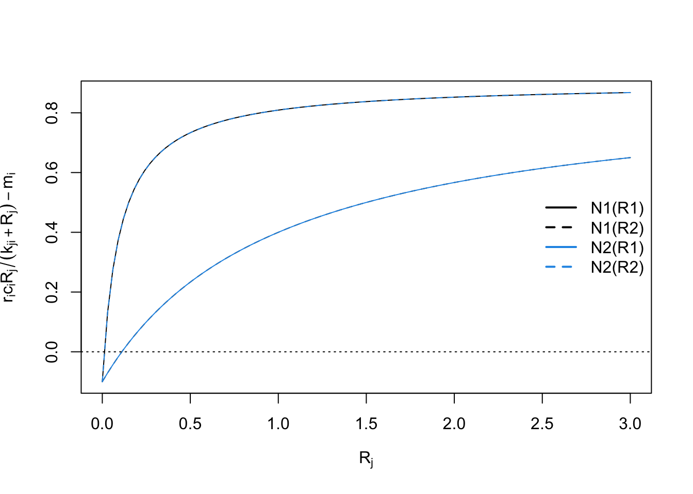

11 Disease-draft
Here we discuss epidemiological disease models. Pathogens cause diseases, and are typically defined as microorganisms (fungi, bacteria, and viruses) with some host specificity, and which undergo population growth within the host.
I think, without tons of evidence, that one nice aspect of disease ecology and the use epidemiological models is that they have helped ecologists feel more comfortable with short term dynamics and also the importance of prediction. Human epidemiology is rightly obsessed with understanding the disease outbreak in front of us, whether it is the common cold, or SARS-CoV-2 and how to alter its course. It is even more interested in being able to predict the course of an outbreak. In contrast, ecology has often been more interested in asymptotic dynamics rather than short term, and more on understanding than prediction. There is a place for everything, and it is good to see the two having merged a bit.
Our simplest models of disease are funny, in that they don’t model pathogens (the enemy) at all. These famous models, by Kermack and McCormick (1927), keep track of different types of hosts, primarily those with and without disease:
- Susceptible hosts Individuals which are not infected, but could become infected,
- Infected hosts Individuals which are already infected, and
- Resistant hosts Individuals which are resistant to the disease, typically assumed to have built up an immunity through past exposure,
where \(N=S+I+R\). It is important to note that \(N\), \(S\), \(I\), and \(R\) are densities. That is, we track numbers of individuals in a fixed area. This is important because it has direct consequences for the spread, or transmission, of disease (McCallum, Barlow, and Hone 2001).
Disease spreads from infected individuals to susceptible individuals. The rate depends to some extent on the number or alternatively, on the fraction of the population that is infected. Resistant individuals are not typically considered vectors of the pathogens, and so increased abundance of resistant individuals slow the transmission rate by diluting the other two groups.
11.1 Constant population size
A good starting place is a simple SIR model for a population of constant size, with no immigration or emigration, (Ellner and Guckenheimer 2006, @Kermack:1927fk). It assumes a constant population size. This is a reasonable assumption over relatively short time intervals, which is fine if we are interested in the progression of a single disease outbreak. \[\begin{align*} \tag{11.1} \frac{d S}{d t} &= -\beta IS\\ \frac{d I}{d t} &=\beta IS - \gamma I\\ \frac{d R}{d t} &= \gamma I \end{align*}\]
# Here we create the function for the simple SIR model.
SIRd <- function(t, y, p) {
{
S <- y[1]
I <- y[2]
R <- y[3]
}
with( as.list(c(y, p)), {
dS.dt <- -B*I*S
dI.dt <- B*I*S - g*I
dR.dt <- g*I
return( list(c(dS.dt, dI.dt, dR.dt)) )
} )
}11.1.1 Density-dependent transmission
In (11.1), the total transmission rate depends on the density of susceptible hosts. The transmission coefficient, \(\beta\), describes the instantaneous rate at which the number of infected hosts increases per infected individual. It is directly analogous to the attack rate of type I prey-dependent models. Recall that it is based on the law of mass action, borrowed from physics and chemistry. It assumes that the rate at which events occur (new infections) is due to complete and random mixing of the reactants (\(S,\,I\)), and the rate at which the reactants collide and react can be described by a single constant, \(\beta\). As density of either type of molecule increases, so too does the rate of interaction. In prey-dependent predation, we referred to \(aN\) as a linear functional response; here we refer to \(\beta S\) as the density-dependent transmission function. The transmission rate is the instantaneous rate for the number of new infections or cases per unit time (McCallum, Barlow, and Hone 2001).
Resistant individuals might be resistant for one of two reasons. They may die, or they may develop immunities. In either case, we assume they cannot catch the disease again, nor spread the disease. As this model assumses a constant population size, we continue to count all \(R\) individuals, regardless of whether they become immune or die.
The individuals become resistant to this disease at the constant per capita rate, \(\gamma\). The rate \(\gamma\) is also the inverse of the mean residence time, or , of the disease.
Disease incidence is the number of new infections or cases occurring over a defined time interval. This definition makes incidence a discrete-time version of transmission rate. Disease prevalence is the fraction of the population that is infected \(I/N\).
A common question in disease ecology is to ask under what conditions will an outbreak occur. Another way of asking that is to ask what conditions cause \(\dot{I}>0\). We can set \(dI/dt > 0\) and solve for something interesting about what is required for an outbreak to occur. \[\begin{align} \tag{11.2} 0 & < \beta IS - \gamma I\notag\\ \frac{\gamma}{\beta} &< S \end{align}\] What does this tell us? First, because we could divide through by \(I\), it means that if no one is infected, then an outbreak can’t happen—it is the usual, but typically unstable equilibrium at 0. Second, it tells us that an outbreak will occur if the absolute density of susceptibles57 is greater than \(\gamma / \beta\). If we consider the pre-outbreak situation where \(S \approx N\), then simply making the population size (and density) low enough can halt the spread of disease. This is why outbreaks tend to occur in high density populations, such as agricultural hosts (e.g., cattle), or historically in urban human populations, or in schools.
Vaccinations are a way to reduce \(S\) without reducing \(N\). If a sufficient number of individuals in the population are vaccinated to reduce \(S\) below \(\gamma / \beta\), this tends to protect the unvaccinated individuals as well.
Another common representation of this is called the force of infection or basic reproductive rate of the disease. If we assume that in a large population \(S \approx N\), then rearranging (11.2) gives us \[\begin{equation} \tag{11.3} R_0=\frac{\beta N}{\gamma} \end{equation}\] where \(R_0\) is the basic reproductive rate of the disease. If \(R_0 > 1\), then an outbreak (i.e., disease growth) is plausible. Try not to confuse density of resistant hosts, \(R\), with the basic reproductive rate of the disease, \(R_0\). This is analogous to the finite rate of increase of a population where \(\lambda>1\).
Here we model the outbreak of a nonlethal disease (e.g., a new cold virus in winter at university). We assume that the disease is neither life-threatening, and nor is anyone resistant, thus \(R=0\). We can investigate the SIR model by pretending that, as is often the case, we begin with a largely uninfected population and \(t=0\), so \(I_0=1\) and \(S_0\approx N\). We first set parameters. Let’s assume that a cold lasts about a week - that is the duration of the disease, which is \(1/\gamma\). This assumes that the duration ot he cold symptoms are exponentially distributed.
parms <- c(B=.001, g=1/7)
N <- 10^3; I <- R <- 1; S <- N - I - R
y <- c(S=S, I=I, R=R)
# Next we integrate for 20 weeks.
weeks <- seq(0, 20, by=0.01)
out1 <- data.frame( ode(y, weeks, SIRd, parms) )
out2 <- pivot_longer(out1, cols=S:R, names_to="Host", values_to="N")
ggplot(out2, aes(time, N, linetype=Host)) + geom_line() + labs(x="Weeks")
It is important at this point to reiterate a point we made above—these conclusions apply when S, I, and R are densities (McCallum, Barlow, and Hone 2001). If you increase population size but also the area associated with the population, then you have not changed density. If population size only increases, but density is constant, then interaction frequency does not increase. Some populations may increase in density as they increase is size, but some may not. Mass action dynamics are the same as type I functional response as predators—there is a constant linear increase in per capita infection rate as the number of susceptible hosts increases.
11.1.2 Frequency-dependent transmission
In addition to density-dependent transmission, investigators have used other forms of density dependence. One the most common is typically known as frequency–dependent transmission, where transmission depends on the prevalence, or the frequency of infecteds in the population, \(I/N\). \[\begin{align} \frac{d S}{d t} &= - \beta \frac{SI}{N} \tag{11.4}\\ \frac{d I}{d t} &= \beta \frac{SI}{N} - \gamma I \tag{11.5}\\ \frac{d I}{d t} &= \gamma I. \tag{11.6} \end{align}\]
Here we create the function for the system of ODEs in eq. .
SIRf <- function(t, y, p) {
{
S <- y[1]
I <- y[2]
R <- y[3]
N <- S + I + R
}
with( as.list(c(y,p)), {
dS.dt <- -B*I*S/N
dI.dt <- B*I*S/N - g*I
dR.dt <- g*I
return( list(c(dS.dt, dI.dt, dR.dt)) )
} )
}The proper form of the transmission function depends on the mode of transmission (McCallum, Barlow, and Hone 2001). Imagine two people are on an elevator, one sick (infected), and one healthy but susceptible, and then the sick individual sneezes (Ellner and Guckenheimer 2006). This results in a particular probability, \(\beta\), that the susceptible individual gets infected. Now imagine resistant individuals get on the elevator—should adding resistant individuals change the probability that the susceptible individual gets infected? Note what has and has not changed. First, with the addition of a resistant individual, \(N\) has increased, and prevalence, \(I/N\), has decreased. However, the densities of \(I\) and \(S\) remain the same (1 per elevator). What might happen? There are at least two possible outcomes:
- If sufficient amounts of the virus spread evenly throughout the elevator, adding a resistant individual does not change the probability of the susceptible becoming sick, and the rate of spread will remain dependent on the densities of \(I\) and \(S\)—the rate will not vary with declining prevalence.
- If only the immediate neighbor gets exposed to the pathogen, then the probability that the neighbor is susceptible declines with increasing \(R\), and thus the rate of spread will decline with declining prevalence.
It is fairly easy to imagine different scenarios, and it is very important to justify the form of the function. Density- and frequency-dependent transmission are the two most common caricatures.
R <- 0; S <- I <- 1000; Ss <- Is <- seq(1, S, length=11); N <- S+I+R
betaD <- 0.1; betaF <- betaD*N
# sapply will calculate the transmission functions for each combination of
# the values of $I$ and $S$.
mat1 <- sapply(Is, function(i) betaD * i * Ss)
mat2 <- sapply(Is, function(i) betaF * i * Ss / (i + Ss + R) )
# Now we plot these matrices.
{
layout(matrix(1:2, nr=1))
persp(mat1, theta=20, phi=15, r=10, zlim=c(0,betaD*S*I),
main="Density Dependent",
xlab="I", ylab="S", zlab="Transmission Rate")
persp(mat2, theta=20, phi=15, r=10, zlim=c(0,betaF*S*I/N),
main="Frequency Dependent",
xlab="I", ylab="S", zlab="Transmission Rate")
}
What does frequency–dependent transmission imply about dynamics? Let’s solve for \(dI / dt > 0\). \[\begin{align} \tag{11.7} 0 &< \beta \frac{SI}{N} - \gamma I \notag\\ \gamma &< \beta \frac{S}{N}. \end{align}\] As we did above, let’s consider the pre-outbreak situation where \(S \approx N\), so that \(S/N \approx 1\). In that case, the basic reproductive rate is \(R_0=\beta/\gamma\), which is independent of \(N\). An outbreak will occur as long as \(\beta > \gamma\), regardless of population density. This is in direct contrast to the density-dependent transmission model ((11.4), (11.5)), where outbreak could be prevented if we simply reduce the population, \(N\), to a sufficently low density. Both modes of transmission are observed in human and non-human populations, so it is important to understand how the disease is spread in order to predict its dynamics.
Another interesting phenomenon with frequency–dependent transmission is that prevalence (\(I/N\)) can decline with increasing population size (Fig. ??). Two phenomena contribute to this pattern. First, outbreak in a completely susceptible population typically begins with a single individual, and so initial prevalence is always \(I/N=1/N\). Second, as a consequence of this, the transmission rate is lower in larger populations because \(\beta SI/N\) is small. As a consequence, prevalence remains low for a relatively long time. In a seasonal population, most individuals in large populations remain uninfected after four months. Depending upon the organism, this could be long enough to reproduce. In contrast, a density–dependent model typically shows the oppositive, pattern, with more rapid, extreme outbreaks and greater prevalence in more dense populations (Fig. ??).
SIR dynamics with frequency–dependent transmission (Fig. (fig:sirFD)). Here we demonstrate that prevalence can decline with increasing population size in a frequency–dependent disease (e.g., a smut on plant (Antonovics and Alexander 1992)). Let us assume that resistance cannot be acquired, so \(\gamma=0\), and \(R = 0\). We can investigate the SIR model by pretending that, as is often the case, we begin with a largely uninfected population and \(t=0\), so \(I_0=1\) and \(S_0\approx N\). We first set parameters.
We next integrate for six months, letting \(R=S/2\).
Months <- seq(0, 8, by=0.1)
outd <- sapply(S, function(s) {out <- ode(c(s,I,R), Months, SIRd, parmsd)
out[,3]/apply(out[,2:4], 1, sum) } )
outf <- sapply(S, function(s) {out <- ode(c(s,I,R), Months, SIRf, parmsf)
out[,3]/apply(out[,2:4], 1, sum) } )
#TR <- sapply(S, function(s) {R <- s/2; parmsf["B"]*s*I/(s+I+R)})Last, we make the figures.
matplot(Months, outd, type='l', col=1, ylab="Prevalence (I/N)")
matplot(Months, outf, type='l', col=1, ylab="Prevalence (I/N)")
legend('bottomright', legend=S, lty=1:length(S), bty='n')
#plot(S, TR)

11.2 SIR with population dynamics
The above model assumes a constant population size—sort of. Recall that the “resistant group” could consist of those that acquire the ultimate immunity, death. In any event, we could make a more complex model that includes population growth and death unrelated to disease. Here we add births, \(b\), potentially by all types, sick or not (\(S+I+R\)), and we assume that the newborns are susceptible only. We also added a mortality term to each group (\(mS,\,mI,\,mR\)). \[\begin{align} \tag{11.8} \frac{\D S}{\D t} &= b \left( S+I+R \right) - \beta SI - mS\\ \frac{\D I}{\D t} &=\beta SI - \gamma I - mI\\ \frac{\D R}{\D t} &= \gamma I - mR \end{align}\] Note that the births add only to the susceptible group, whereas density independent mortality subtracts from each group.
Disease model with population growth Here we create the function for the system of ODE’s in (11.8).
SIRbd <- function(t, y, p) {
S <- y[1]; I <- y[2]; R <- y[3]
with( as.list(p), {
dS.dt <- b*(S+I+R) - B*I*S - m*S
dI.dt <- B*I*S - g*I - m*I
dR.dt <- g*I - m*R
return( list(c(dS.dt, dI.dt, dR.dt)) )
} )
}Let’s start to work with this model—that frequently means making simplifying assumptions. We might start by assuming that if infected and resistant individuals can contribute to offspring, then the disease is relatively benign. Therefore, we can assume that mortality is the same for all groups (\(m_i=m\)). Last, let us assume (again) a constant population size. This means that birth rate equals mortality or \(b=m\).
Now imagine a large city, with say, a million people. Let’s then assume that we start of with a population of virtually all susceptible people, but we introduce a single infected person.
Let us further pretend that the disease runs its course over about 10–14 days. Recall that \(\gamma\) (gamma) is the inverse of the duration of the disease.
Given a constant population size and exponential growth, then the average life span is the inverse of the birth rate. Let us pretend that the average life span is 50 years.
For this model, the force of infection turns out to be \(R_0 = 1 + 1 / \left(b + \alpha\right)\), where \(\alpha\) is the average age at onset of the disease (Ellner and Guckenheimer 2006). We can therefore estimate \(\beta\) from all the other parameters, including population size, average life span, average age at onset, and the average duration of the disease. For instance, imagine that we have a disease of children, where the average onset of disease is 5,y, so we have
so \(\beta\) becomes
Finally, we can integrate the population and its states. We create a named vector of parameters, and decide on the time interval.
It turns out that because of the relatively extreme dynamics (Fig. ), we want to tell the ODE solver to take baby steps, so as to properly capture the dynamics—we use the argument to make sure that the maximum step it takes is relatively small.
SIRbd.out <- data.frame(ode(c(S=S,I=I,R=R), years, SIRbd, parms, hmax=.01))
matplot(SIRbd.out[,1], sqrt(SIRbd.out[,-1]), type='l', col=1,
lty=1:3, ylab="sqrt(No. of Individuals)", xlab='Years')
legend('right', c('S','I','R'), lty=1:3, bty='n')
Figure 11.1: Epidemic for a nonlethal disease, with an SIR model which includes births and deaths, and a constant population size.
Note that the population quickly becomes resistant (Fig. ). Note also that we have oscillations, albeit damped oscillations. An analytical treatment of the model, including eigenanalysis of the Jacobian matrix could show us precisely the predicted periodicity . It depends on the the age at onset, and the duration of the disease.
Elaborate on this stuff?
Antonovic et al. Metapopulation disease dynamics
Silene alba and Microbotryum violacea Proportion of subpopulations that have an infected plant increases with the size of the subpopulation
Disease prevalence declines with subpopulation size. This is characteristic of frequency-dependent transmission.
Lyme Disease
Van Buskirk and Ostfeld 1995 Eco. Appl. Borrelia burgdorferi spirochete Blacklegged tick Ixodes scapularis Peromyscus leucopus Whitefooted mouse Whitetailed deer Oedicoilius virginiana spring 1: eggs summer 1: larva on intermediate host - small mammal or bird spring 2: nymph a new intermediate host small mammal or bird summer 2: drops off host 2, seeks definitive host (tyupically deer); most dangerous to humans fall 2: adult on deer (low risk to humans)
host competence: whitefooted mice vs. chipmunks and birds
References
Antonovics, J, and H M Alexander. 1992. “Epidemiology of anther-smut infection of {\(\backslash\)em Silene alba} (= {\(\backslash\)em S. latifolia}) caused by {\(\backslash\)em Ustilago violacea} – patterns of spore deposition in experimental populations.” Proceedings of the Royal Society B-Biological Sciences 250: 157–63.
Ellner, S P, and J Guckenheimer. 2006. Dynamic Models in Biology. Princeton University Press, Princeton, NJ.
Kermack, W O, and W G McCormick. 1927. “A contribution to the mathematical theory of epidemics.” Proceedings of the Royal Society, Series A 115: 700–721.
McCallum, Hamish, Nigel Barlow, and Jim Hone. 2001. “How should pathogen transmission be modelled?” Trends in Ecology and Evolution 16 (6): 295–300.
\(S\) is the absolute density, whereas \(S/N\) is the relative density.↩︎